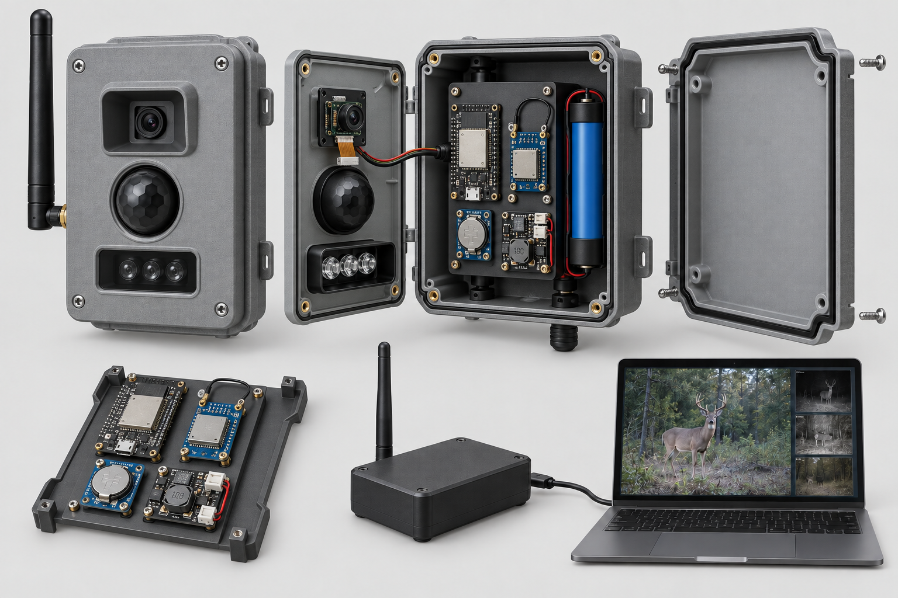
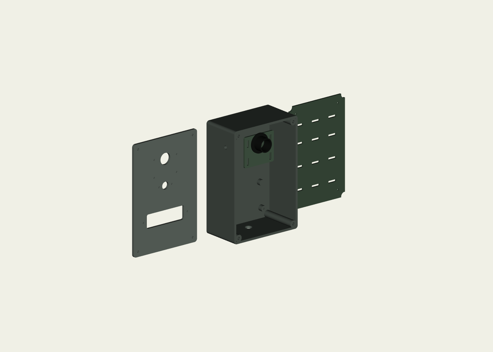
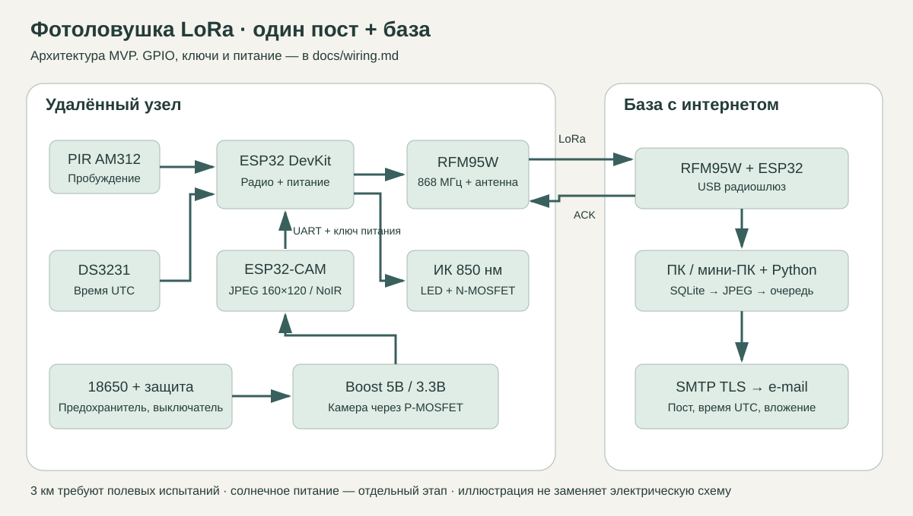

A / С НУЛЯ
Каждая деталь понятна
ESP32-CAM, управляющий ESP32, PIR и подсветка. Полный разбор деталей и собственный серый корпус с CAD для печати.
Новая ветка: USB-приставка. ESP32-S3 скачивает фото через штатный USB камеры · Руководства PDF · GitHub и существующие доработки.
Пошаговый проект камеры для удалённого участка: движение, ночной снимок, передача по радио и письмо с фотографией.

Один радиоканал и база. Три способа собрать пост и получить снимок.
ESP32-CAM, управляющий ESP32, PIR и подсветка. Полный разбор деталей и собственный серый корпус с CAD для печати.
Оригинал на карте, небольшое превью через внешний LoRa-блок. Исследование Ozon/WB и десять кандидатов для проверки.
Убираем заводскую плату и ставим наши ESP32-CAM, контроллер и LoRa868. Донорские окна, крепления и герметичность проверяем отдельно.
130 × 190 × 74 мм. Камера на крышке, отдельные окна PIR и подсветки, съёмная пластина и одна батарея.

Подготовлены STL, STEP, редактируемый исходник и пробник отверстий. Геометрия проверена; реальные платы нужно измерить перед полной печатью.
Разобрать корпус по шагамКамера и радио работают на отдельных контроллерах. База собирает фрагменты JPEG и хранит фотографии до отправки.

Почему начинаем с одного поста. Лес и рельеф могут нарушить связь. Сначала проверить радиотрассу и ночной кадр; затем дорабатывать очередь событий и расширять систему до четырёх устройств.
Размер JPEG и режим LoRa меняют эфирное время. Калькулятор показывает разницу между эфиром и бюджетом с паузами.
BW125 кГц, CR4/5, 200 байт JPEG + 26 байт заголовка. Бюджет времени, а не точная задержка письма. Потери — оценка среднего числа повторов без конечного лимита попыток.
Для различения человека и животного начать с JPEG 160×120. Лица и номера автомобилей требуют отдельного согласования качества.
При условном лимите 1% кадр 5 КиБ на SF7 требует около 15 минут бюджета узла. На SF12 — почти шесть часов, даже без потерь.
1% — расчётное допущение. Допустимые частоты, мощность и режим доступа проверяются для страны и категории устройства. В исходниках передача по умолчанию выключена.
Кандидаты из выдачи Ozon на 07.10.2026. Бюджетные строки отмечены отдельно. Перед заказом проверить совместимость.
| Деталь и проверка перед заказом | Кол-во | Цена | Сумма | Статус цены | Найти |
|---|---|---|---|---|---|
| ESP32-CAM AI Thinker + OV2640Проверить AI Thinker, PSRAM, распиновку; штатная камера не подтверждена как NoIR | 1 | 1 034 ₽ | 1 034 ₽ | Выдача Ozon | |
| ESP32 DevKit 30 pinПроверить доступность GPIO16/17/18/19/21/22/23/25/26/32/33 | 2 | 526 ₽ | 1 052 ₽ | Выдача Ozon | |
| RFM95W 868 МГц SPIТолько 868, питание 3.3В; модуль требует пайки и антенного вывода | 2 | 819 ₽ | 1 638 ₽ | Выдача Ozon | |
| Антенна 868 SMA 1.5 dBiТип SMA, не RP-SMA; кабель/разъём отдельно | 2 | 513 ₽ | 1 026 ₽ | Выдача Ozon | |
| Пигтейл SMA bulkhead 50 Ом под пайкуГерметизировать проход; минимальная длина; совместимость SMA | 2 | 250 ₽ | 500 ₽ | Оценка | |
| AM312 PIROUT <=3.3В, запитать от 3.3В; проверить ложные срабатывания | 1 | 165 ₽ | 165 ₽ | Выдача Ozon | |
| DS3231 RTCБез зарядки CR2032; I2C подтяжки только к 3.3В | 1 | 258 ₽ | 258 ₽ | Выдача Ozon | |
| CR2032 для RTCНе ставить в модуль с активной зарядкой | 1 | 100 ₽ | 100 ₽ | Оценка | |
| Камера/объектив NoIR совместимые с ESP32-CAMНе найден подтверждённый совместимый товар; выяснить до закупки | 1 | 700 ₽ | 700 ₽ | Оценка | |
| ИК LED 850нм 1ВтРабочий ток в MVP 150-200мА, паспорт Vf и радиатор обязательны | 3 | 256 ₽ | 768 ₽ | Выдача Ozon | |
| Резистор 18 Ом 2Вт, комплект 3штПо одному на каждую ветвь LED; уточнить ток измерением | 1 | 150 ₽ | 150 ₽ | Оценка | |
| Радиатор для LED, комплект 3штКонтакт через термоинтерфейс, не закрывать вплотную пластиком | 1 | 200 ₽ | 200 ₽ | Оценка | |
| AO3400 N-MOSFET комплектSOT23 нужен переходник; управление 3.3В, распиновка по паспорту | 1 | 113 ₽ | 113 ₽ | Выдача Ozon | |
| AO3401 P-MOSFET комплектSOT23 переходник; high-side 5В камера | 1 | 128 ₽ | 128 ₽ | Выдача Ozon | |
| 2N3904Номиналы базы/затвора в wiring.md | 1 | 80 ₽ | 80 ₽ | Выдача Ozon | |
| Переходники SOT23, комплектДва переходника минимум | 1 | 120 ₽ | 120 ₽ | Оценка | |
| Резисторы набор1кОм, 100кОм, 100Ом; мощные 18Ом отдельно | 1 | 247 ₽ | 247 ₽ | Выдача Ozon | |
| 18650 с защитой 3400мАчЁмкость/ток проверить; указанная цена не доказывает оригинальность | 1 | 358 ₽ | 358 ₽ | Выдача Ozon | |
| Держатель 1x18650Длина под защищённую ячейку часто 69-70мм | 1 | 196 ₽ | 196 ₽ | Выдача Ozon | |
| Повышающий DC/DC 5ВРеальные 5В 1.5А на входе 3.2В; карточка ещё не подтверждает этот режим | 1 | 226 ₽ | 226 ₽ | Выдача Ozon | |
| TP4056 с защитойТолько USB зарядка отключённой нагрузки; ток заряда по паспорту батареи | 1 | 71 ₽ | 71 ₽ | Выдача Ozon | |
| Предохранитель 2А 5x20, комплектВ цепи батареи, держатель отдельно; проверить пусковой ток | 1 | 213 ₽ | 213 ₽ | Выдача Ozon | |
| Держатель предохранителяИзолированный с проводами | 1 | 100 ₽ | 100 ₽ | Оценка | |
| Выключатель питанияНа ток от батареи >=2А | 1 | 100 ₽ | 100 ₽ | Оценка | |
| Коробка 150x110x70IP исходного корпуса не сохраняется автоматически после сверления | 1 | 215 ₽ | 215 ₽ | Выдача Ozon | |
| Гермоввод PG7, комплектДостаточно на MVP; вводы требуются по фактическим кабелям | 1 | 95 ₽ | 95 ₽ | Выдача Ozon | |
| Конденсаторы 470мкФ 16В комплектМинимум 2 у камеры/питания; плюс 100нФ и 10мкФ у RF | 1 | 93 ₽ | 93 ₽ | Выдача Ozon | |
| Макетная плата пайкаРадиомодуль паять короткими проводами | 2 | 161 ₽ | 322 ₽ | Выдача Ozon | |
| USB TTL CH340 3.3VПроверить реальный TX 3.3В; камеру питать отдельными 5В | 1 | 123 ₽ | 123 ₽ | Выдача Ozon | |
| БП базы 5В 2А + USB кабельНоутбук/ПК с интернетом у заказчика, цена ПК не включена | 1 | 400 ₽ | 400 ₽ | Оценка | |
| Провода, разъёмы, термоусадка, 100нФ, винты, силикагельНабор на узел; RF кабель отдельно | 1 | 650 ₽ | 650 ₽ | Оценка | |
| Стекло окна камеры, прокладки и нейтральный герметикДля PIR отдельная ИК-прозрачная линза; обычное стекло перед PIR нельзя | 1 | 350 ₽ | 350 ₽ | Оценка | |
| 3D-печать монтажной пластины и оптической перегородкиОценка подрядчика, не проверенная цена | 1 | 800 ₽ | 800 ₽ | Оценка |
Подходящих деталей нет. Попробуйте другой запрос.
Общий бюджет включает все позиции и не меняется при поиске. Цены Ozon могут требовать Ozon Карту. WB API вернул 403: ссылки ведут в поиск, наличие и цены не подтверждены. Труд, ПК базы, доставка, мачта и ретранслятор не включены. Ночная камера NoIR пока требует подтверждения продавцом.
Пройти проверку по этапам: каждый следующий шаг опирается на результат предыдущего.
Передать тестовый JPEG с потерями DATA и ACK, проверить восстановленный файл и SQLite.
Измерить напряжения, собрать ключи, проверить JPEG и выключение камеры.
Загрузить узел и шлюз. Получить полный кадр с одинаковыми параметрами радиоканала.
Настроить UTC в DS3231 и SMTP. Проверить номер поста, вложение и очередь при обрыве сети.
Проверить NoIR, подсветку и отсутствие засветки окна на дистанциях 1, 3 и 5 метров.
Снять потери пакетов, качество кадров и расход батареи на реальной трассе.
Исходники, смета, схемы и параметрические детали. Архив содержит только материалы проекта, без переписки и секретов.
Python-приёмник, тесты, четыре Arduino-скетча, PlatformIO-конфигурация и документация. Прошивки пока не скомпилированы и не испытаны на железе.
Скачать ZIPДемо: python -m src.cli demo --loss 0.2